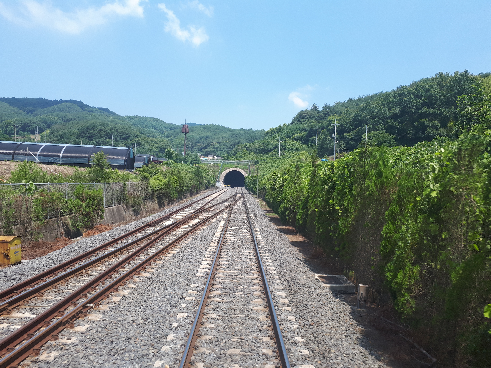

(한국 장항선. 열차 뒤쪽 창문으로 직접 촬영)
표준궤는 1435mm의 궤간으로, 전세계 70%의 철도에서 쓰이고 있는 궤간이다.
이 궤간은 1830년 영국의 철도 기술자 '조지 스티븐슨'에 의해 처음으로 쓰였고, 이후 영국의 여러 철도에서 널리 쓰이게 되었다.
이후 여러가지 궤간이 나타났고 서로 경쟁을 하게 됐지만 이 궤간이 가장 보편적이었고, 1845년 영국 왕립 철도 궤간 위원회(Royal Commission on Railway Guages)에서 이 궤간을 지지하는 보고서를 발표했다.
그리고 1년 뒤인 1846년에 제정된 궤간법(Railway Regulation (Gauge) Act 1846)에 따라 이 궤간이 표준이 되었다.
철도의 발상지인 영국에서 표준으로 지정된 이 궤간은, 이후 영국 밖에서도 쓰이게 되었다.
영국이나 미국, 한국, 중국, 프랑스 등 매우 다양하게 쓰인다. 이 때문에, 사용 국가나 노선을 열거하는 것이 무의미할 정도이다.